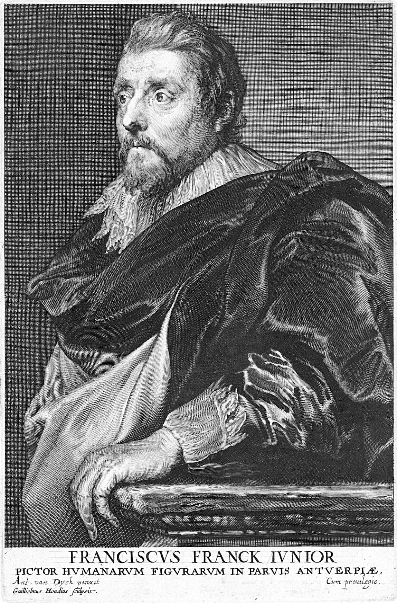

Frans Francken the Younger (1581-1642)
Frans Francken the Younger was born in Antwerp in 1581 to painter Frans Francken the Elder and Elisabeth Mertens. He was exposed to the Flemish art world from an early age by his father, Frans the Elder, and his uncle, Hieronymus Francken. Alongside his older brother, Hieronymus II, he trained under his father in Antwerp and under his uncle in Paris. As a young man in 1605, he became a master at the Guild of St. Luke, and would go on to hold a number of high-ranking positions in the guild, eventually becoming deacon in 1616. By 1607, he had his own workshop; and in November of that year, he married Elisabeth Plaquet. The couple would have nine children and at least two of their sons, Frans III and Hieronymus III, would become painters themselves. Francken enjoyed a critically and commercially successful career and had a significant role in the development of early seventeenth-century Flemish art. He died on May 6, 1642, having cemented his family’s artistic legacy and secured his own.
Francken was a highly prolific artist and sold originals as well as copies and prints of his works. Though Francken was a technically skilled artist, it was his development of new subject matter that had the most profound effect on Flemish art. While his output included many traditional subjects with historical, allegorical, and religious themes, he is best known for his invention of several new genres. Among these are his famous “monkey kitchen” works, which present traditional genre scenes acted out by monkeys. These usually had some sort of moral message or were read as commentary on human society. Francken was also the inventor of the “art collection” picture or paintings that depicted other works of art. He finished the first of these in 1914. It was this predilection for strange and offbeat subjects that would make Francken such a popular figure in the Flemish art market.
Francken worked with a number of collaborators, including Tobias Verhaecht, Abraham Govaerts, Hans Jordaens III, Hendrik van Steenwijk I, and his brother, Hieronymus Francken. Among his collaborators was also Jan Brueghel the Elder. Francken had been influenced by Jan’s father, Pieter Bruegel, and he in turn acted as an inspiration for Jan. The younger Brueghel was interested in Francken's unconventional themes and compositions, and often contributed flowers and other background details to Francken’s paintings. It can be assumed through their numerous collaborations that they had a close working relationship. Jan was particularly engaged by Francken’s imaginary art gallery paintings, in which Francken often depicted artworks similar to those Jan was painting, so that Francken’s pictures represent a dialogue of ideas between the two artists.
- Ximena Valdarrago